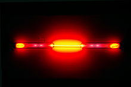

Neon
|  | |||||||||||||||||||||||||||||||||||||||||||||||||||||||||||||||||||||||||||||||||||||||||||||||||||||||||||||||||||||||||||||||||||||||||||||||||||||||||||||||||||||||||||||||||||||||||||||||||||||||||||||||||||||||||||||||||||||
|
Spectral lines of neon in the visible region
|
|||||||||||||||||||||||||||||||||||||||||||||||||||||||||||||||||||||||||||||||||||||||||||||||||||||||||||||||||||||||||||||||||||||||||||||||||||||||||||||||||||||||||||||||||||||||||||||||||||||||||||||||||||||||||||||||||||||
| General properties | |||||||||||||||||||||||||||||||||||||||||||||||||||||||||||||||||||||||||||||||||||||||||||||||||||||||||||||||||||||||||||||||||||||||||||||||||||||||||||||||||||||||||||||||||||||||||||||||||||||||||||||||||||||||||||||||||||||
|---|---|---|---|---|---|---|---|---|---|---|---|---|---|---|---|---|---|---|---|---|---|---|---|---|---|---|---|---|---|---|---|---|---|---|---|---|---|---|---|---|---|---|---|---|---|---|---|---|---|---|---|---|---|---|---|---|---|---|---|---|---|---|---|---|---|---|---|---|---|---|---|---|---|---|---|---|---|---|---|---|---|---|---|---|---|---|---|---|---|---|---|---|---|---|---|---|---|---|---|---|---|---|---|---|---|---|---|---|---|---|---|---|---|---|---|---|---|---|---|---|---|---|---|---|---|---|---|---|---|---|---|---|---|---|---|---|---|---|---|---|---|---|---|---|---|---|---|---|---|---|---|---|---|---|---|---|---|---|---|---|---|---|---|---|---|---|---|---|---|---|---|---|---|---|---|---|---|---|---|---|---|---|---|---|---|---|---|---|---|---|---|---|---|---|---|---|---|---|---|---|---|---|---|---|---|---|---|---|---|---|---|---|---|---|---|---|---|---|---|---|---|---|---|---|---|---|---|---|---|
| Name, symbol | neon, Ne | ||||||||||||||||||||||||||||||||||||||||||||||||||||||||||||||||||||||||||||||||||||||||||||||||||||||||||||||||||||||||||||||||||||||||||||||||||||||||||||||||||||||||||||||||||||||||||||||||||||||||||||||||||||||||||||||||||||
| Pronunciation | /ˈniːɒn/ | ||||||||||||||||||||||||||||||||||||||||||||||||||||||||||||||||||||||||||||||||||||||||||||||||||||||||||||||||||||||||||||||||||||||||||||||||||||||||||||||||||||||||||||||||||||||||||||||||||||||||||||||||||||||||||||||||||||
| Appearance | colorless gas exhibiting an orange-red glow when placed in a high voltage electric field | ||||||||||||||||||||||||||||||||||||||||||||||||||||||||||||||||||||||||||||||||||||||||||||||||||||||||||||||||||||||||||||||||||||||||||||||||||||||||||||||||||||||||||||||||||||||||||||||||||||||||||||||||||||||||||||||||||||
| Neon in the periodic table | |||||||||||||||||||||||||||||||||||||||||||||||||||||||||||||||||||||||||||||||||||||||||||||||||||||||||||||||||||||||||||||||||||||||||||||||||||||||||||||||||||||||||||||||||||||||||||||||||||||||||||||||||||||||||||||||||||||
|
|||||||||||||||||||||||||||||||||||||||||||||||||||||||||||||||||||||||||||||||||||||||||||||||||||||||||||||||||||||||||||||||||||||||||||||||||||||||||||||||||||||||||||||||||||||||||||||||||||||||||||||||||||||||||||||||||||||
| Atomic number | 10 | ||||||||||||||||||||||||||||||||||||||||||||||||||||||||||||||||||||||||||||||||||||||||||||||||||||||||||||||||||||||||||||||||||||||||||||||||||||||||||||||||||||||||||||||||||||||||||||||||||||||||||||||||||||||||||||||||||||
| Standard atomic weight (±) | 20.1797(6)[1] | ||||||||||||||||||||||||||||||||||||||||||||||||||||||||||||||||||||||||||||||||||||||||||||||||||||||||||||||||||||||||||||||||||||||||||||||||||||||||||||||||||||||||||||||||||||||||||||||||||||||||||||||||||||||||||||||||||||
| Element category | noble gas | ||||||||||||||||||||||||||||||||||||||||||||||||||||||||||||||||||||||||||||||||||||||||||||||||||||||||||||||||||||||||||||||||||||||||||||||||||||||||||||||||||||||||||||||||||||||||||||||||||||||||||||||||||||||||||||||||||||
| Group, block | group 18 (noble gases), p-block | ||||||||||||||||||||||||||||||||||||||||||||||||||||||||||||||||||||||||||||||||||||||||||||||||||||||||||||||||||||||||||||||||||||||||||||||||||||||||||||||||||||||||||||||||||||||||||||||||||||||||||||||||||||||||||||||||||||
| Period | period 2 | ||||||||||||||||||||||||||||||||||||||||||||||||||||||||||||||||||||||||||||||||||||||||||||||||||||||||||||||||||||||||||||||||||||||||||||||||||||||||||||||||||||||||||||||||||||||||||||||||||||||||||||||||||||||||||||||||||||
| Electron configuration | [He] 2s2 2p6 | ||||||||||||||||||||||||||||||||||||||||||||||||||||||||||||||||||||||||||||||||||||||||||||||||||||||||||||||||||||||||||||||||||||||||||||||||||||||||||||||||||||||||||||||||||||||||||||||||||||||||||||||||||||||||||||||||||||
| per shell | 2, 8 | ||||||||||||||||||||||||||||||||||||||||||||||||||||||||||||||||||||||||||||||||||||||||||||||||||||||||||||||||||||||||||||||||||||||||||||||||||||||||||||||||||||||||||||||||||||||||||||||||||||||||||||||||||||||||||||||||||||
| Physical properties | |||||||||||||||||||||||||||||||||||||||||||||||||||||||||||||||||||||||||||||||||||||||||||||||||||||||||||||||||||||||||||||||||||||||||||||||||||||||||||||||||||||||||||||||||||||||||||||||||||||||||||||||||||||||||||||||||||||
| Phase | gas | ||||||||||||||||||||||||||||||||||||||||||||||||||||||||||||||||||||||||||||||||||||||||||||||||||||||||||||||||||||||||||||||||||||||||||||||||||||||||||||||||||||||||||||||||||||||||||||||||||||||||||||||||||||||||||||||||||||
| Melting point | 24.56 K (−248.59 °C, −415.46 °F) | ||||||||||||||||||||||||||||||||||||||||||||||||||||||||||||||||||||||||||||||||||||||||||||||||||||||||||||||||||||||||||||||||||||||||||||||||||||||||||||||||||||||||||||||||||||||||||||||||||||||||||||||||||||||||||||||||||||
| Boiling point | 27.104 K (−246.046 °C, −410.883 °F) | ||||||||||||||||||||||||||||||||||||||||||||||||||||||||||||||||||||||||||||||||||||||||||||||||||||||||||||||||||||||||||||||||||||||||||||||||||||||||||||||||||||||||||||||||||||||||||||||||||||||||||||||||||||||||||||||||||||
| Density at stp (0 °C and 101.325 kPa) | 0.9002 g·L−1 | ||||||||||||||||||||||||||||||||||||||||||||||||||||||||||||||||||||||||||||||||||||||||||||||||||||||||||||||||||||||||||||||||||||||||||||||||||||||||||||||||||||||||||||||||||||||||||||||||||||||||||||||||||||||||||||||||||||
| when liquid, at b.p. | 1.207 g·cm−3[2] | ||||||||||||||||||||||||||||||||||||||||||||||||||||||||||||||||||||||||||||||||||||||||||||||||||||||||||||||||||||||||||||||||||||||||||||||||||||||||||||||||||||||||||||||||||||||||||||||||||||||||||||||||||||||||||||||||||||
| Triple point | 24.556 K, 43.37 kPa[3][4] | ||||||||||||||||||||||||||||||||||||||||||||||||||||||||||||||||||||||||||||||||||||||||||||||||||||||||||||||||||||||||||||||||||||||||||||||||||||||||||||||||||||||||||||||||||||||||||||||||||||||||||||||||||||||||||||||||||||
| Critical point | 44.4918 K, 2.7686 MPa[4] | ||||||||||||||||||||||||||||||||||||||||||||||||||||||||||||||||||||||||||||||||||||||||||||||||||||||||||||||||||||||||||||||||||||||||||||||||||||||||||||||||||||||||||||||||||||||||||||||||||||||||||||||||||||||||||||||||||||
| Heat of fusion | 0.335 kJ·mol−1 | ||||||||||||||||||||||||||||||||||||||||||||||||||||||||||||||||||||||||||||||||||||||||||||||||||||||||||||||||||||||||||||||||||||||||||||||||||||||||||||||||||||||||||||||||||||||||||||||||||||||||||||||||||||||||||||||||||||
| Heat of vaporization | 1.71 kJ·mol−1 | ||||||||||||||||||||||||||||||||||||||||||||||||||||||||||||||||||||||||||||||||||||||||||||||||||||||||||||||||||||||||||||||||||||||||||||||||||||||||||||||||||||||||||||||||||||||||||||||||||||||||||||||||||||||||||||||||||||
| Molar heat capacity | 20.79[5] J·mol−1·K−1 | ||||||||||||||||||||||||||||||||||||||||||||||||||||||||||||||||||||||||||||||||||||||||||||||||||||||||||||||||||||||||||||||||||||||||||||||||||||||||||||||||||||||||||||||||||||||||||||||||||||||||||||||||||||||||||||||||||||
vapor pressure
|
|||||||||||||||||||||||||||||||||||||||||||||||||||||||||||||||||||||||||||||||||||||||||||||||||||||||||||||||||||||||||||||||||||||||||||||||||||||||||||||||||||||||||||||||||||||||||||||||||||||||||||||||||||||||||||||||||||||
| Atomic properties | |||||||||||||||||||||||||||||||||||||||||||||||||||||||||||||||||||||||||||||||||||||||||||||||||||||||||||||||||||||||||||||||||||||||||||||||||||||||||||||||||||||||||||||||||||||||||||||||||||||||||||||||||||||||||||||||||||||
| Oxidation states | 0 | ||||||||||||||||||||||||||||||||||||||||||||||||||||||||||||||||||||||||||||||||||||||||||||||||||||||||||||||||||||||||||||||||||||||||||||||||||||||||||||||||||||||||||||||||||||||||||||||||||||||||||||||||||||||||||||||||||||
| Ionization energies | 1st: 2080.7 kJ·mol−1 2nd: 3952.3 kJ·mol−1 3rd: 6122 kJ·mol−1 (more) |
||||||||||||||||||||||||||||||||||||||||||||||||||||||||||||||||||||||||||||||||||||||||||||||||||||||||||||||||||||||||||||||||||||||||||||||||||||||||||||||||||||||||||||||||||||||||||||||||||||||||||||||||||||||||||||||||||||
| Covalent radius | 58 pm | ||||||||||||||||||||||||||||||||||||||||||||||||||||||||||||||||||||||||||||||||||||||||||||||||||||||||||||||||||||||||||||||||||||||||||||||||||||||||||||||||||||||||||||||||||||||||||||||||||||||||||||||||||||||||||||||||||||
| Van der Waals radius | 154 pm | ||||||||||||||||||||||||||||||||||||||||||||||||||||||||||||||||||||||||||||||||||||||||||||||||||||||||||||||||||||||||||||||||||||||||||||||||||||||||||||||||||||||||||||||||||||||||||||||||||||||||||||||||||||||||||||||||||||
| Miscellanea | |||||||||||||||||||||||||||||||||||||||||||||||||||||||||||||||||||||||||||||||||||||||||||||||||||||||||||||||||||||||||||||||||||||||||||||||||||||||||||||||||||||||||||||||||||||||||||||||||||||||||||||||||||||||||||||||||||||
| Crystal structure | face-centered cubic (fcc) | ||||||||||||||||||||||||||||||||||||||||||||||||||||||||||||||||||||||||||||||||||||||||||||||||||||||||||||||||||||||||||||||||||||||||||||||||||||||||||||||||||||||||||||||||||||||||||||||||||||||||||||||||||||||||||||||||||||
| Speed of sound | 435 m·s−1 (gas, at 0 °C) | ||||||||||||||||||||||||||||||||||||||||||||||||||||||||||||||||||||||||||||||||||||||||||||||||||||||||||||||||||||||||||||||||||||||||||||||||||||||||||||||||||||||||||||||||||||||||||||||||||||||||||||||||||||||||||||||||||||
| Thermal conductivity | 49.1×10−3 W·m−1·K−1 | ||||||||||||||||||||||||||||||||||||||||||||||||||||||||||||||||||||||||||||||||||||||||||||||||||||||||||||||||||||||||||||||||||||||||||||||||||||||||||||||||||||||||||||||||||||||||||||||||||||||||||||||||||||||||||||||||||||
| Magnetic ordering | diamagnetic[6] | ||||||||||||||||||||||||||||||||||||||||||||||||||||||||||||||||||||||||||||||||||||||||||||||||||||||||||||||||||||||||||||||||||||||||||||||||||||||||||||||||||||||||||||||||||||||||||||||||||||||||||||||||||||||||||||||||||||
| Bulk modulus | 654 GPa | ||||||||||||||||||||||||||||||||||||||||||||||||||||||||||||||||||||||||||||||||||||||||||||||||||||||||||||||||||||||||||||||||||||||||||||||||||||||||||||||||||||||||||||||||||||||||||||||||||||||||||||||||||||||||||||||||||||
| CAS Registry Number | 7440-01-9 | ||||||||||||||||||||||||||||||||||||||||||||||||||||||||||||||||||||||||||||||||||||||||||||||||||||||||||||||||||||||||||||||||||||||||||||||||||||||||||||||||||||||||||||||||||||||||||||||||||||||||||||||||||||||||||||||||||||
| History | |||||||||||||||||||||||||||||||||||||||||||||||||||||||||||||||||||||||||||||||||||||||||||||||||||||||||||||||||||||||||||||||||||||||||||||||||||||||||||||||||||||||||||||||||||||||||||||||||||||||||||||||||||||||||||||||||||||
| Prediction | William Ramsay (1897) | ||||||||||||||||||||||||||||||||||||||||||||||||||||||||||||||||||||||||||||||||||||||||||||||||||||||||||||||||||||||||||||||||||||||||||||||||||||||||||||||||||||||||||||||||||||||||||||||||||||||||||||||||||||||||||||||||||||
| Discovery and first isolation | William Ramsay & Morris Travers[7][8] (1898) | ||||||||||||||||||||||||||||||||||||||||||||||||||||||||||||||||||||||||||||||||||||||||||||||||||||||||||||||||||||||||||||||||||||||||||||||||||||||||||||||||||||||||||||||||||||||||||||||||||||||||||||||||||||||||||||||||||||
| Most stable isotopes | |||||||||||||||||||||||||||||||||||||||||||||||||||||||||||||||||||||||||||||||||||||||||||||||||||||||||||||||||||||||||||||||||||||||||||||||||||||||||||||||||||||||||||||||||||||||||||||||||||||||||||||||||||||||||||||||||||||
|
|||||||||||||||||||||||||||||||||||||||||||||||||||||||||||||||||||||||||||||||||||||||||||||||||||||||||||||||||||||||||||||||||||||||||||||||||||||||||||||||||||||||||||||||||||||||||||||||||||||||||||||||||||||||||||||||||||||
{kind=link}
{kind=link}
{kind=link}
Neon is a chemical element with symbol Ne and atomic number 10. It is in group 18 (noble gases) of the periodic table.[9] Neon is a colorless, odorless, inert monatomic gas under standard conditions, with about two-thirds the density of air. It was discovered (along with krypton and xenon) in 1898 as one of the three residual rare inert elements remaining in dry air, after nitrogen, oxygen, argon and carbon dioxide were removed. Neon was the second of these three rare gases to be discovered, and was immediately recognized as a new element from its bright red emission spectrum. The name neon is derived from the Greek word, νέον, neuter singular form of νέος [neos], meaning new. Neon is chemically inert and forms no uncharged chemical compounds.
During cosmic nucleogenesis of the elements, large amounts of neon are built up from the alpha-capture fusion process in stars. Although neon is a very common element in the universe and solar system (it is fifth in cosmic abundance after hydrogen, helium, oxygen and carbon), it is very rare on Earth. It composes about 18.2 ppm of air by volume (this is about the same as the molecular or mole fraction), and a smaller fraction in Earth's crust. The reason for neon's relative scarcity on Earth and the inner (terrestrial) planets is that neon forms no compounds to fix it to solids, and is highly volatile. This led to its escaping from the planetesimals under the warmth of the newly ignited Sun in the early Solar System. Even the atmosphere of Jupiter is somewhat depleted of neon, presumably for this reason.
Neon gives a distinct reddish-orange glow when used in either low-voltage neon glow lamps or in high-voltage discharge tubes or neon advertising signs.[10][11] The red emission line from neon is also responsible for the well known red light of helium–neon lasers. Neon is used in some plasma tube and refrigerant applications but has few other commercial uses. It is commercially extracted by the fractional distillation of liquid air. It is considerably more expensive than helium, since air is its only source.
Contents
[hide]History[edit]
{kind=link}
Neon (Greek νέον (néon), neuter singular form of νέος meaning "new"), was discovered in 1898 by the British chemists Sir William Ramsay (1852–1916) and Morris W. Travers (1872–1961) in London, England.[12] Neon was discovered when Ramsay chilled a sample of air until it became a liquid, then warmed the liquid and captured the gases as they boiled off. The gases nitrogen, oxygen, and argon had been identified, but the remaining gases were isolated in roughly their order of abundance, in a six-week period beginning at the end of May 1898. First to be identified was krypton. The next, after krypton had been removed, was a gas which gave a brilliant red light under spectroscopic discharge. This gas, identified in June, was named neon, the Greek analogue of "novum", (new), the name Ramsay's son suggested.[13] The characteristic brilliant red-orange color that is emitted by gaseous neon when excited electrically was noted immediately; Travers later wrote, "the blaze of crimson light from the tube told its own story and was a sight to dwell upon and never forget."[14] Finally, the same team discovered xenon by the same process, in June.
Neon's scarcity precluded its prompt application for lighting along the lines of Moore tubes, which used nitrogen and which were commercialized in the early 1900s. After 1902, Georges Claude's company, Air Liquide, was producing industrial quantities of neon as a byproduct of his air liquefaction business. In December 1910 Claude demonstrated modern neon lighting based on a sealed tube of neon. Claude tried briefly to get neon tubes to be used for indoor lighting, due to their intensity, but failed, as homeowners rejected neon light sources due to their color. Finally in 1912, Claude's associate began selling neon discharge tubes as advertising signs, where they were instantly more successful as eye catchers. They were introduced to the U.S. in 1923, when two large neon signs were bought by a Los Angeles Packard car dealership. The glow and arresting red color made neon advertising completely different from the competition.[15]
Neon played a role in the basic understanding of the nature of atoms in 1913, when J. J. Thomson, as part of his exploration into the composition of canal rays, channeled streams of neon ions through a magnetic and an electric field and measured their deflection by placing a photographic plate in their path. Thomson observed two separate patches of light on the photographic plate (see image), which suggested two different parabolas of deflection. Thomson eventually concluded that some of the atoms in the neon gas were of higher mass than the rest. Though not understood at the time by Thomson, this was the first discovery of isotopes of stable atoms. It was made by using a crude version of an instrument we now term as a mass spectrometer.
Isotopes[edit]
{kind=link}
Neon is the second lightest inert gas. Neon has three stable isotopes: 20Ne (90.48%), 21Ne (0.27%) and 22Ne (9.25%). 21Ne and 22Ne are partly primordial and partly nucleogenic (i.e., made by nuclear reactions of other nuclides with neutrons or other particles in the environment) and their variations in natural abundance are well understood. In contrast, 20Ne (the chief primordial isotope made in stellar nucleosynthesis) is not known to be nucleogenic or radiogenic (save for cluster decay production, which is thought to produce only a small amount). The causes of the variation of 20Ne in the Earth have thus been hotly debated.[16]
The principal nuclear reactions which generate nucleogenic neon isotopes start from 24Mg and 25Mg, which produce 21Ne and 22Ne, respectively, after neutron capture and immediate emission of an alpha particle. The neutrons that produce the reactions are mostly produced by secondary spallation reactions from alpha particles, in turn derived from uranium-series decay chains. The net result yields a trend towards lower 20Ne/22Ne and higher 21Ne/22Ne ratios observed in uranium-rich rocks such as granites.[17] Neon-21 may also be produced in a nucleogenic reaction, when 20Ne absorbs a neutron from various natural terrestrial neutron sources.
In addition, isotopic analysis of exposed terrestrial rocks has demonstrated the cosmogenic (cosmic ray) production of 21Ne. This isotope is generated by spallation reactions on magnesium, sodium, silicon, and aluminium. By analyzing all three isotopes, the cosmogenic component can be resolved from magmatic neon and nucleogenic neon. This suggests that neon will be a useful tool in determining cosmic exposure ages of surface rocks and meteorites.[18]
Similar to xenon, neon content observed in samples of volcanic gases is enriched in 20Ne, as well as nucleogenic 21Ne, relative to 22Ne content. The neon isotopic content of these mantle-derived samples represents a non-atmospheric source of neon. The 20Ne-enriched components are attributed to exotic primordial rare gas components in the Earth, possibly representing solar neon. Elevated 20Ne abundances are found in diamonds, further suggesting a solar neon reservoir in the Earth.[19]
Characteristics[edit]
Neon is the second-lightest noble gas, after helium. It glows reddish-orange in a vacuum discharge tube. Also, neon has the narrowest liquid range of any element: from 24.55 K to 27.05 K (−248.45 °C to −245.95 °C, or −415.21 °F to −410.71 °F). It has over 40 times the refrigerating capacity of liquid helium and three times that of liquid hydrogen (on a per unit volume basis).[2] In most applications it is a less expensive refrigerant than helium.[20][21]
{kind=link}
Neon plasma has the most intense light discharge at normal voltages and currents of all the noble gases. The average color of this light to the human eye is red-orange due to many lines in this range; it also contains a strong green line which is hidden, unless the visual components are dispersed by a spectroscope.[22]
Two quite different kinds of neon lighting are in common use. Neon glow lamps are generally tiny, with most operating at about 100–250 volts.[23] They have been widely used as power-on indicators and in circuit-testing equipment, but light-emitting diodes (LEDs) now dominate in such applications. These simple neon devices were the forerunners of plasma displays and plasma television screens.[24][25] Neon signs typically operate at much higher voltages (2–15 kilovolts), and the luminous tubes are commonly meters long.[26] The glass tubing is often formed into shapes and letters for signage as well as architectural and artistic applications.
Occurrence[edit]
Stable isotopes of neon are produced in stars. 20Ne is created in fusing helium and oxygen in the alpha process, which requires temperatures above 100 megakelvins and masses greater than 3 solar masses.
Neon is abundant on a universal scale; it is the fifth most abundant chemical element in the universe by mass, after hydrogen, helium, oxygen, and carbon (see chemical element). Its relative rarity on Earth, like that of helium, is due to its relative lightness, high vapor pressure at very low temperatures, and chemical inertness, all properties which tend to keep it from being trapped in the condensing gas and dust clouds which resulted in the formation of smaller and warmer solid planets like Earth.
Neon is monatomic, making it lighter than the molecules of diatomic nitrogen and oxygen which form the bulk of Earth's atmosphere; a balloon filled with neon will rise in air, albeit more slowly than a helium balloon.[27]
Neon's abundance in the universe is about 1 part in 750 and in the Sun and presumably in the proto-solar system nebula, about 1 part in 600. The Galileo spacecraft atmospheric entry probe found that even in the upper atmosphere of Jupiter, the abundance of neon is reduced (depleted) by about a factor of 10, to a level of 1 part in 6,000 by mass. This may indicate that even the ice-planetesimals which brought neon into Jupiter from the outer solar system, formed in a region which was too warm for them to have kept their neon (abundances of heavier inert gases on Jupiter are several times that found in the Sun).[28]
Neon is rare on Earth, found in the Earth's atmosphere at 1 part in 55,000, or 18.2 ppm by volume (this is about the same as the molecule or mole fraction), or 1 part in 79,000 of air by mass. It comprises a smaller fraction in the crust. It is industrially produced by cryogenic fractional distillation of liquefied air.[2]
Applications[edit]
{kind=link}
Neon is often used in signs and produces an unmistakable bright reddish-orange light. Although still referred to as "neon", other colors are generated with different noble gases or by varied colors of fluorescent lighting.
Neon is used in vacuum tubes, high-voltage indicators, lightning arrestors, wave meter tubes, television tubes, and helium–neon lasers. Liquefied neon is commercially used as a cryogenic refrigerant in applications not requiring the lower temperature range attainable with more extreme liquid helium refrigeration.
Both neon gas and liquid neon are relatively expensive – for small quantities, the price of liquid neon can be more than 55 times that of liquid helium. The driver for neon's expense is the rarity of neon, which unlike helium, can only be obtained from air.
The triple point temperature of neon (24.5561 K) is a defining fixed point in the International Temperature Scale of 1990.[3]
Compounds[edit]
Neon is the first p-block noble gas. Neon is generally considered to be inert. No true neutral compounds of neon are known. However, the ions Ne+, (NeAr)+, (NeH)+, and (HeNe+) have been observed from optical and mass spectrometric studies, and there are some unverified reports of an unstable hydrate.[2]
See also[edit]
References[edit]
- Jump up ^ Standard Atomic Weights 2013. Commission on Isotopic Abundances and Atomic Weights
- ^ Jump up to: a b c d Hammond, C.R. (2000). The Elements, in Handbook of Chemistry and Physics 81st edition (PDF). CRC press. p. 19. ISBN 0849304814.
- ^ Jump up to: a b Preston-Thomas, H. (1990). "The International Temperature Scale of 1990 (ITS-90)". Metrologia 27: 3–10. Bibcode:1990Metro..27....3P. doi:10.1088/0026-1394/27/1/002.
- ^ Jump up to: a b Haynes, William M., ed. (2011). CRC Handbook of Chemistry and Physics (92nd ed.). Boca Raton, FL: CRC Press. p. 4.122. ISBN 1439855110.
- Jump up ^ Shuen-Chen Hwang, Robert D. Lein, Daniel A. Morgan (2005). "Noble Gases". Kirk Othmer Encyclopedia of Chemical Technology. Wiley. pp. 343–383. doi:10.1002/0471238961.0701190508230114.a01.
- Jump up ^ Magnetic susceptibility of the elements and inorganic compounds, in Lide, D. R., ed. (2005). CRC Handbook of Chemistry and Physics (86th ed.). Boca Raton (FL): CRC Press. ISBN 0-8493-0486-5.
- Jump up ^ Ramsay, William, Travers, Morris W. (1898). "On the Companions of Argon". Proceedings of the Royal Society of London 63 (1): 437–440. doi:10.1098/rspl.1898.0057.
- Jump up ^ "Neon: History". Softciências. Retrieved 2007-02-27.
- Jump up ^ Group 18 refers to the modern numbering of the periodic table. Older numberings described the rare gases as Group 0 or Group VIIIA (sometimes shortened to 8). See also Group (periodic table).
- Jump up ^ Coyle, Harold P. (2001). Project STAR: The Universe in Your Hands. Kendall Hunt. p. 464. ISBN 978-0-7872-6763-6.
- Jump up ^ Kohmoto, Kohtaro (1999). "Phosphors for lamps". In Shionoya, Shigeo; Yen, William M. Phosphor Handbook. CRC Press. p. 940. ISBN 978-0-8493-7560-6.
- Jump up ^ Ramsay, William, Travers, Morris W. (1898). "On the Companions of Argon". Proceedings of the Royal Society of London 63 (1): 437–440. doi:10.1098/rspl.1898.0057.
- Jump up ^ "Neon: History". Softciências. Retrieved 2007-02-27.
- Jump up ^ Weeks, Mary Elvira (2003). Discovery of the Elements: Third Edition (reprint). Kessinger Publishing. p. 287. ISBN 978-0-7661-3872-8.
- Jump up ^ Mangum, Aja (December 8, 2007). "Neon: A Brief History". New York Magazine. Retrieved 2008-05-20.
- Jump up ^ Dickin, Alan P (2005). "Neon". Radiogenic isotope geology. p. 303. ISBN 978-0-521-82316-6.
- Jump up ^ Resources on Isotopes. Periodic Table—Neon. explanation of the nucleogenic sources of Ne-21 and Ne-22. USGS.gov
- Jump up ^ "Neon: Isotopes". Softciências. Retrieved 2007-02-27.
- Jump up ^ Anderson, Don L. "Helium, Neon & Argon". Mantleplumes.org. Retrieved 2006-07-02.
- Jump up ^ "NASSMC: News Bulletin". December 30, 2005. Retrieved 2007-03-05.[dead link]
- Jump up ^ Mukhopadhyay, Mamata (2012). Fundamentals of Cryogenic Engineering. p. 195. ISBN 9788120330573.
- Jump up ^ "Plasma". Retrieved 2007-03-05.
- Jump up ^ Baumann, Edward (1966). Applications of Neon Lamps and Gas Discharge Tubes. Carlton Press.
- Jump up ^ Myers, Robert L. (2002). Display interfaces: fundamentals and standards. John Wiley and Sons. pp. 69–71. ISBN 978-0-471-49946-6.
Plasma displays are closely related to the simple neon lamp.
- Jump up ^ Weber, Larry F. (April 2006). "History of the plasma display panel". IEEE Transactions on Plasma Science 34 (2): 268–278. Bibcode:2006ITPS...34..268W. doi:10.1109/TPS.2006.872440. Paid access.
- Jump up ^ "ANSI Luminous Tube Footage Chart" (PDF). American National Standards Institute (ANSI). Retrieved 2010-12-10. Reproduction of a chart in the catalog of a lighting company in Toronto; the original ANSI specification is not given.
- Jump up ^ Gallagher, R.; Ingram, P. (2001-07-19). Chemistry for Higher Tier. University Press. p. 282. ISBN 978-0-19-914817-2.
- Jump up ^ Morse, David (January 26, 1996). "Galileo Probe Science Result". Galileo Project. Retrieved 2007-02-27.
External links[edit]
- Neon at The Periodic Table of Videos (University of Nottingham)
- WebElements.com – Neon.
- It's Elemental – Neon
- USGS Periodic Table – Neon
- Atomic Spectrum of Neon
- Neon Museum, Las Vegas
| [hide] Periodic table (Large cells) | |||||||||||||||||||||||||||||||||
|---|---|---|---|---|---|---|---|---|---|---|---|---|---|---|---|---|---|---|---|---|---|---|---|---|---|---|---|---|---|---|---|---|---|
| 1 | 2 | 3 | 4 | 5 | 6 | 7 | 8 | 9 | 10 | 11 | 12 | 13 | 14 | 15 | 16 | 17 | 18 | ||||||||||||||||
| 1 | H | He | |||||||||||||||||||||||||||||||
| 2 | Li | Be | B | C | N | O | F | Ne | |||||||||||||||||||||||||
| 3 | Na | Mg | Al | Si | P | S | Cl | Ar | |||||||||||||||||||||||||
| 4 | K | Ca | Sc | Ti | V | Cr | Mn | Fe | Co | Ni | Cu | Zn | Ga | Ge | As | Se | Br | Kr | |||||||||||||||
| 5 | Rb | Sr | Y | Zr | Nb | Mo | Tc | Ru | Rh | Pd | Ag | Cd | In | Sn | Sb | Te | I | Xe | |||||||||||||||
| 6 | Cs | Ba | La | Ce | Pr | Nd | Pm | Sm | Eu | Gd | Tb | Dy | Ho | Er | Tm | Yb | Lu | Hf | Ta | W | Re | Os | Ir | Pt | Au | Hg | Tl | Pb | Bi | Po | At | Rn | |
| 7 | Fr | Ra | Ac | Th | Pa | U | Np | Pu | Am | Cm | Bk | Cf | Es | Fm | Md | No | Lr | Rf | Db | Sg | Bh | Hs | Mt | Ds | Rg | Cn | 113 | Fl | 115 | Lv | 117 | 118 | |
|
|
|||||||||||||||||||||||||||||||||